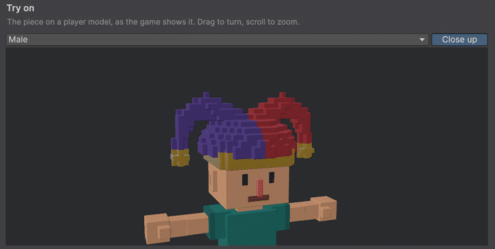
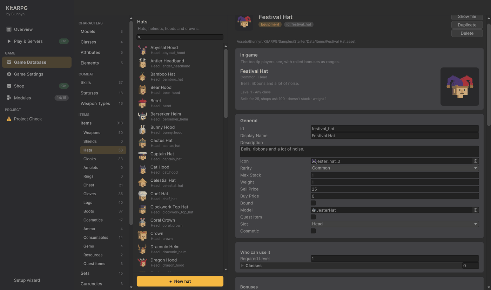
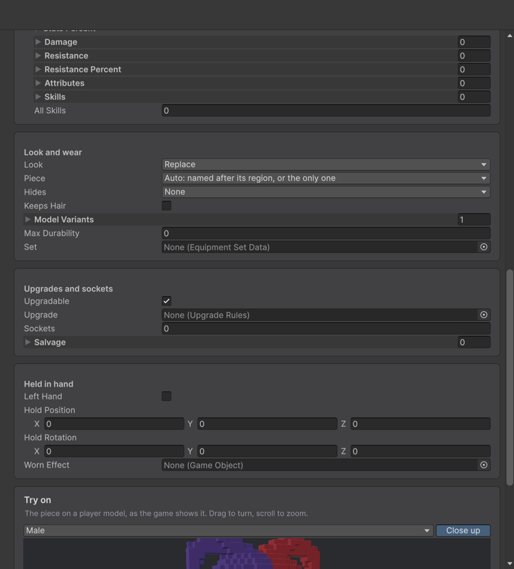
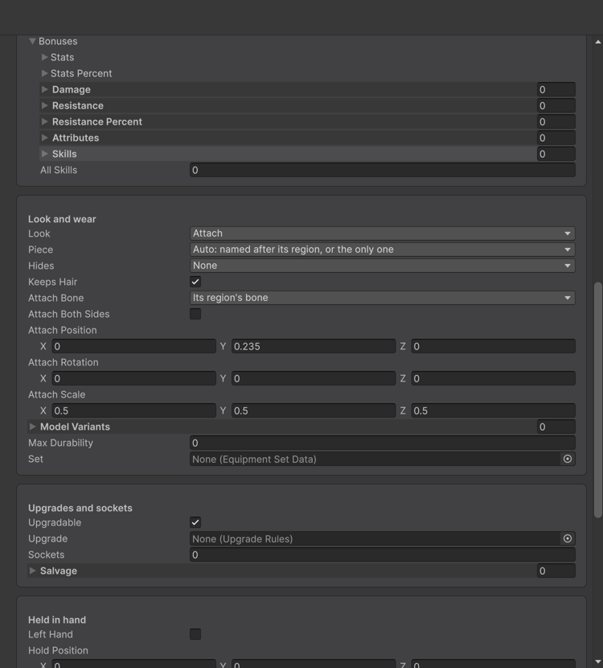
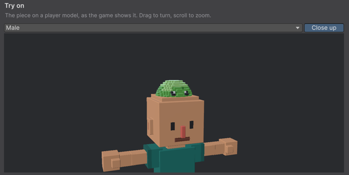
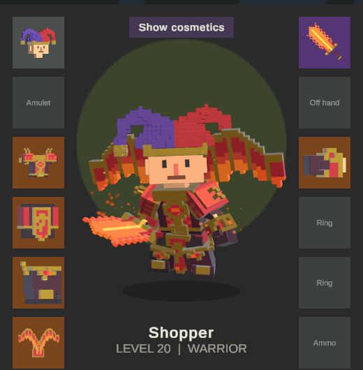
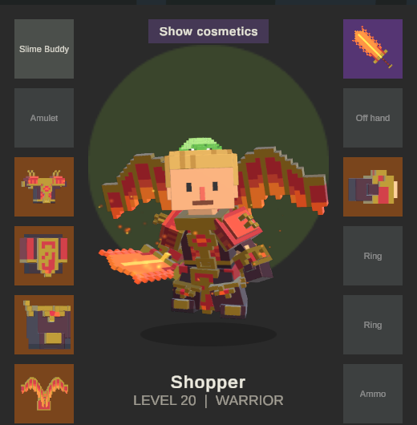

分步指南
制作帽子
本指南制作两件头部装备：一顶 Festival Hat，在每种身体上替换头部装备的位置；以及一只 Slime Buddy，一个无需绑定骨骼就能坐在角色头上的怪物模型。

装备如何显示在角色上
玩家角色由多个区域组成：头部、头发、胸部、手、腿、脚和背部。一件装备通过 Look 说明它如何显示：
| Look | 作用 | 适用于 |
|---|---|---|
| Replace | 它的蒙皮网格取代该区域。 | 为你的身体骨架绑定的装备。 |
| Add | 它的蒙皮网格绘制在该区域之上，区域本身保留。 | 绑定骨骼的叠加层：围巾、腰带。 |
| Attach | 它的模型原样挂在一根骨骼上。 | 任何未绑定骨骼的模型：道具、怪物、Asset Store 中的王冠。 |
| None | 不显示任何东西。 | 戒指，或只提供属性的装备。 |
有关区域和命名的更多内容见玩家模型。
第 1 部分：绑定骨骼的帽子
1. 创建物品
- 在 Game Database 中打开 Items > Items > Hats。
- 按 + New hat。新物品已经位于 Head 栏位。
- 设置 Id
festival_hat、Display NameFestival Hat和一段 Description。 - 将 Model 设为帽子的 FBX。示例的帽子位于
Art/3D/VoxelHero/Gear/Hats；本指南使用JesterHat。

2. 设置外观
滚动到 Look and wear：
- Look：Replace。
- Piece：Auto 会选择以区域命名的网格（如
Knight_Head）或唯一的网格。如果你的模型用其他方式命名网格，从列表中选择正确的那个。 - Hides：穿戴时不绘制的区域。头部装备会自动隐藏头发；王冠和发带请开启 Keeps Hair。
- Model Variants：用于其他身体的模型。熊猫的头更大，因此添加一个变体，Model Id 为
voxel_panda，Model 为JesterHat_Panda。

3. 在 Try on 中检查
在页面底部，Try on 使用游戏本身的代码在玩家模型上显示该部件。在列表中选择一个模型，开启 Close up，拖动来旋转，滚动来缩放。如果它无法在该模型上显示，会有一条消息说明原因，例如缺少网格名称。
用 KitARPG > Render Missing Item Icons 生成它的图标：它会为每个有模型但没有图标的物品拍照。
第 2 部分：未绑定骨骼的模型
1. 创建物品
按上面的方法再做一顶帽子：Id slime_buddy，Display Name Slime Buddy，Model Art/3D/VoxelHero/Monsters/Slime。
2. 挂载它
在 Look and wear 中：
| 字段 | 值 | 作用 |
|---|---|---|
| Look | Attach | 把模型挂在一根骨骼上。 |
| Keeps Hair | 开启 | 史莱姆坐在头发上。 |
| Attach Bone | 其区域的骨骼 | 帽子对应头部。也可以选择任意其他人形骨骼，如手或脊柱。 |
| Attach Position | Y 0.235 | 距骨骼的米数。这里是向上。 |
| Attach Scale | 0.5, 0.5, 0.5 | 一半大小。 |
Attach Both Sides 会在另一侧放一个镜像副本，用于手套、靴子和护肩。

修改数值时观察 Try on：它会立即更新。

3. 试一试
- 按 Play 进入游戏。
- 在聊天框中输入
/item festival_hat 1和/item slime_buddy 1。 - 打开背包（
I），双击每一件来穿戴。头像会显示出来。
| Festival Hat | Slime Buddy |
|---|---|
 |
 |
其他玩家看到的也一样：他们只接收每个栏位的物品 id，并用相同的规则绘制。
如果没有显示
Project Check 会列出在某个玩家模型上无法显示的每件装备及其原因。常见原因：
- 模型中没有以区域命名的蒙皮网格，而 Piece 为 Auto：在 Piece 中选择网格。
- 模型未绑定骨骼而 Look 为 Replace：将 Look 设为 Attach。
- 模型绑定到了另一套骨架：把它绑定到你的身体骨架，或使用 Attach。